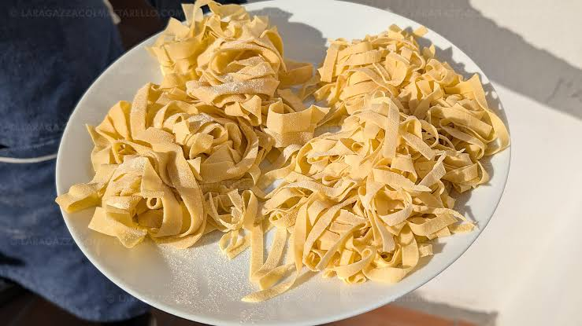

Breve receta de como hacer pasta
Para 2 personas:
Tip: siempre se usan 100 gramos de harina y 1 huevo por persona
Poner la harina sobre la mesada, hacer un hueco en el medio y colocar los huevos. Batirlos con un tenedor e ir incorporando la harina de los bordes de a poco hasta que se incorpore todo
amasar con la palma de la mano, estirando y plegando la masa hasta que quede lisa y firme
Envolver la pasa con un film y dejarla descansar
Enharina la superficie y colocar la masa. con un palo de amasar, estirar la masa hasta que quede bien fina, aproximadamente de 2 milimetro. Apenas termine se espolvorea harina asi no se pega
Ir plegando la masa horizontalmente, se lleva el borde inferior hasta el la mitad, despues repetir con la parte superior. Repetir hasta que quede comodo para cortar
Una vez plegada, con un cuchillo, cortar en en tiras del ancho que desee, el tipo de pasta dependera del largo:
En una holla, agregar abundante agua, una vez que rompa el hervor agregar sal a gusto. Luego agregar la pasta frsca y dejar hervir entre 3 y 5 minutos. Retirar y servir